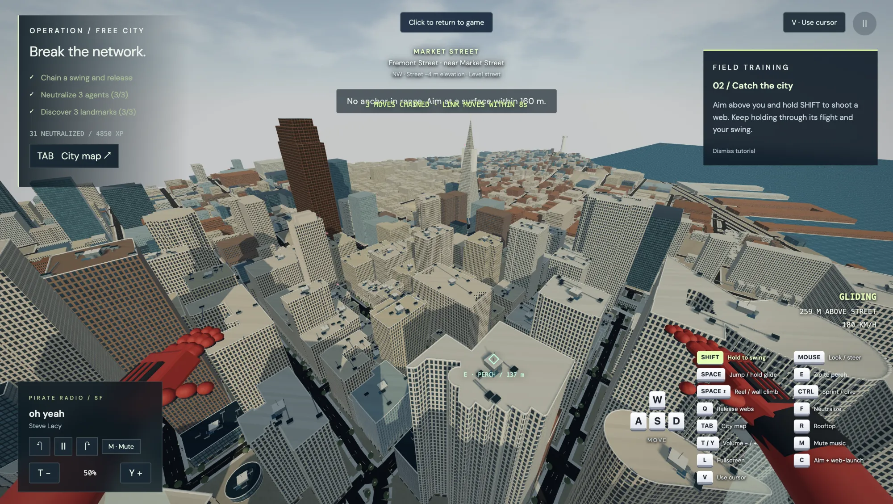

Swingfidi
swingfidi.com
My co-worker challenged me that Spider-Man wouldn't be able to swing around SF. So I built this to prove him wrong.
Swingfidi is fully live. The Financial District and more of the city's major landmarks are all mapped out, so you can actually swing, glide and zip your way through it.